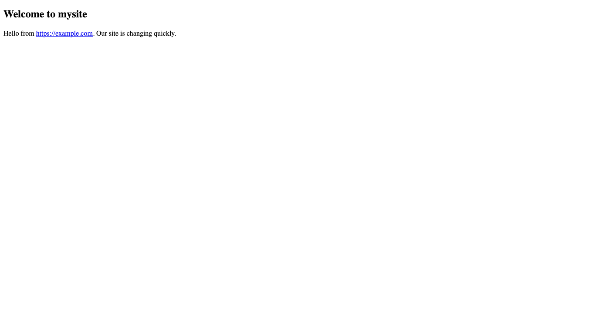
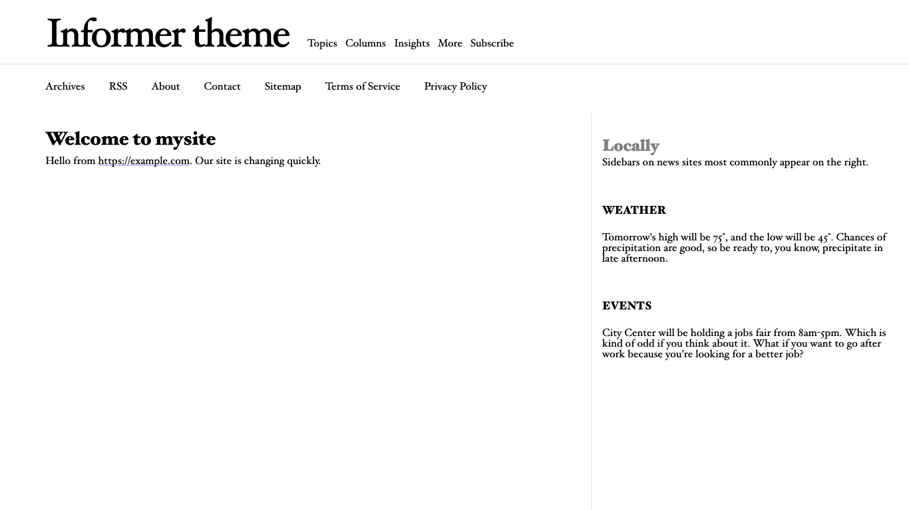
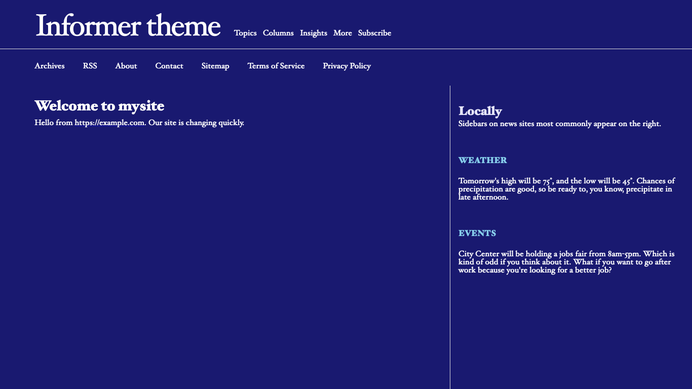
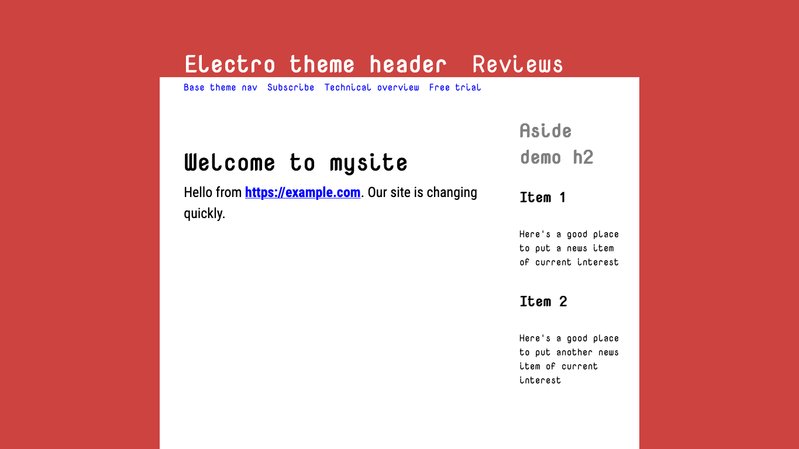
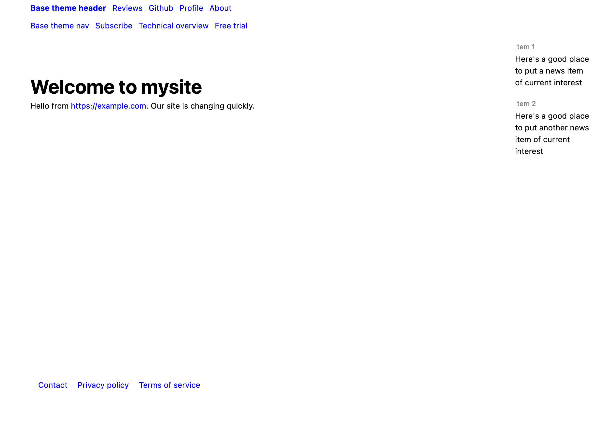

Changing themes
Recall that we were left with this newly edited page:

We can totally remodel this tiny site with one change.
- Add
theme: informerbetween the lines at the top of theindex.mdpage:
---
title: "Powered with ♥ by PocoCMS"
theme: informer
---
# Welcome to mysite
Hello from https://example.com. Our site is changing quickly.
- Save the file and run poco again.
Things are looking up!

If you're in dark mode, you will see that the theme automatically takes advantage of it:

That's because it was made with the PocoCMS theme framework, which has a ton of other advantages, such as automatic mobile support responsive mode, and other traits to be discussed later.
Front matter
By the way, you'll note that you can change how the blog looks
by changing things you see in between lines of 3 dashes (---)
as shown here:
---
title: "Powered with ♥ by PocoCMS"
theme: informer
---
You will have noticed that it doesn't affect the text of the article. That's because it's technically a separate document called the front matter. You don't need front matter in a PocoCMS file, but you'll find it's a big part of your existence when changing the look and format of your websites. Much more about front matter as lessons progress.
Trying a few more themes
- Let's look at another theme, Electro:
---
title: "Powered with ♥ by PocoCMS"
theme: electro
---

- Finally, let's choose something generic: the Base theme. Base is, well, the basis of all PocoCMS themes that use the framework.
---
title: "Powered with ♥ by PocoCMS"
theme: base
---
